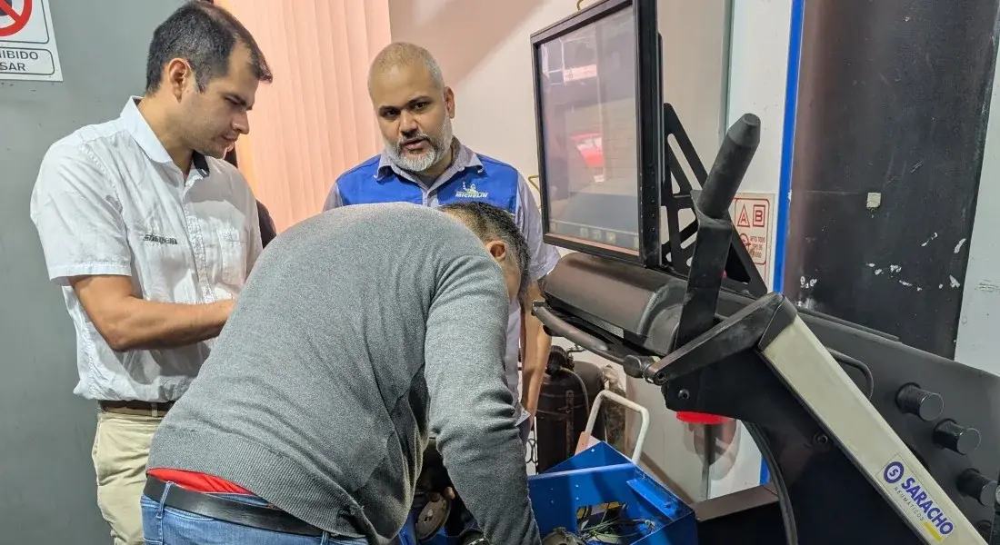

La durabilidad de los equipos son clave para el éxito de cualquier negocio, contar con un socio confiable para el manejo de tus máquinas es esencial. En Trivium Center, nos especializamos en ofrecer servicios integrales que van más allá de la simple venta: desde asesoramiento técnico personalizado hasta instalación profesional, mantenimiento post-venta y actualizaciones de equipos. Con una trayectoria de 20 años en el sector, estamos comprometidos a construir confianza con nuestros clientes en toda Argentina, asegurando que tu inversión rinda al máximo.
Nuestros Servicios: Soluciones a Medida para Tus Necesidades
Ofrecemos un portafolio completo de servicios diseñados para optimizar el ciclo de vida de tus máquinas. Aquí te detallamos cada uno:
- Asesoramiento Técnico: Nuestro equipo de expertos te guía en la selección y optimización de equipos. Ya sea para elegir la máquina ideal para tu operación o para implementar mejores prácticas, recibes consultoría personalizada que maximiza la eficiencia y reduce costos.
- Instalación Profesional: Instalamos tus máquinas con precisión y seguridad, garantizando un arranque sin problemas desde el primer día. Nuestro servicio cubre toda Argentina, con técnicos capacitados que se desplazan a tu ubicación para una implementación impecable.
- Mantenimiento Post-Venta: Evita interrupciones costosas con planes de mantenimiento preventivo y correctivo. Incluimos revisiones periódicas, limpieza y ajustes para extender la vida útil de tus equipos.
- Actualización de Equipos: Mantente a la vanguardia con upgrades tecnológicos. Modernizamos tus máquinas incorporando las últimas innovaciones, como mejoras en software, hardware o integración con sistemas inteligentes.
Garantías que Te Protegen
Tu tranquilidad es nuestra prioridad:
- Garantía de 1 año por defectos de fábrica.
- Repuestos originales con envíos exprés.
- Capacitación gratuita durante la instalación.
- Políticas flexibles de devoluciones y reembolsos.